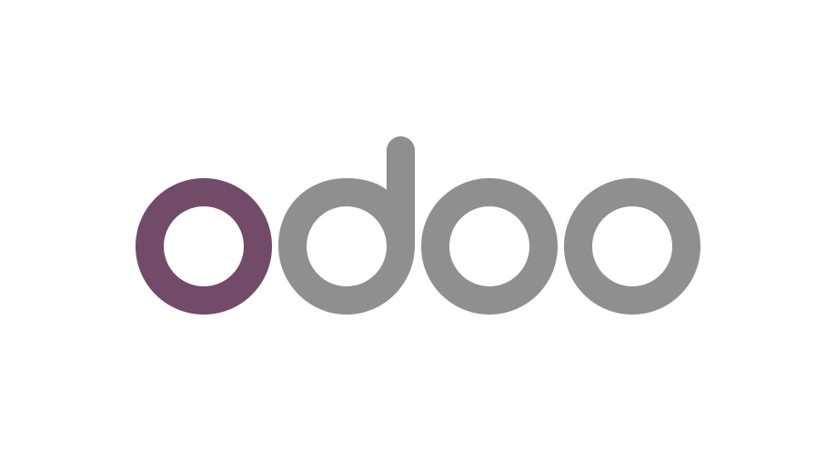

Flann.
A conversational AI operator with shared business knowledge and actions across connected platforms.
Flann gives business owners one place to communicate with an AI operator. It draws on a central knowledge base of processes, customer context, previous interactions and business preferences, then selects tools and executes tasks across connected platforms. I worked across the product architecture, agent behaviour, integration design and hands-on implementation, with approvals for sensitive actions.

OdooERP & customer dataThe problem
Owners work across too many disconnected tools—customer records, staff messages, bookings, campaigns and operational tasks. Useful data exists, but turning it into an action requires constant manual work.
The system
A tool-use architecture with structured business context, long-term memory, queued messaging, customer segmentation, bookings, scheduled tasks, human escalation and an approvals layer for sensitive actions.
Engineering considerations
Permission-aware writes, duplicate-call guards, provider failures, rate limits, safe defaults, multilingual user experience, execution state and honest failure reporting.
ERP-connected apps. Operations in sync.
Application-to-ERP integration work with Revaluar, connecting apps with POS, inventory and accounting.
I connect application interfaces to ERP systems through APIs, so the app and the business operate from aligned data. Whether the application is built in Flutter, on the web or in another stack, the integration links orders, stock, products, customer records and accounting workflows instead of leaving each system as a separate island.
Application connectivity
Connect mobile, web and custom application workflows to the ERP through an API integration layer.
Consistent operational data
Map records and synchronise changes across POS, stock, products, customer data and accounting.
Reliable integration logic
Validate payloads, handle failures and make sync status visible so teams can manage exceptions.
Client handovers without the chaos.
A custom portal connecting staff, clients, files, QR codes and WhatsApp.
Designed an internal handover application where employees work through an operational checklist and clients receive a clean, read-only portal. Instead of tracking a project across scattered messages and files, the information has one structured source of truth.
Built for two audiences
Employees manage checklists, files, contacts and payments; clients open an access-controlled portal using a link sent over WhatsApp.
Security & reliability
Role-based access, Supabase row-level security, short-lived signed asset URLs, WhatsApp verification and revocable client links.
Operational value
Consistent delivery, fewer missing documents and a much clearer handover experience for clients and internal teams.
Brainzyme: a YMYL content engine.
A repeatable system for research, content creation, review and publishing in a sensitive YMYL category.
I built a YMYL content engine for Brainzyme, connecting research, drafting, editing, human review and Shopify publishing in a repeatable workflow. Health and wellbeing content needs careful sourcing and precise claims, so editorial checks are built into the process from brief to publication.
The bottleneck
Multiple repetitive content-production steps and review handoffs across research, product information and CMS publication.
My contribution
Research, content creation, editing checkpoints, reusable workflows and publication-ready outputs.
Scope
Research-led editorial workflows and Shopify content operations, with particular care around sensitive health information.
Loyalty connected to a wider marketing stack.
Extending Boomerangme with connected data, email and SMS services.
I extended the loyalty workflow by connecting customer data and reward activity to services beyond the wallet card. Email delivery, SMTP and SMS integrations make that data usable across a wider marketing stack, supporting segmentation and coordinated communication without rebuilding the loyalty platform itself.
Start with loyalty behaviour
Use visit patterns, rewards and customer profiles to define useful audiences and follow-up triggers.
Connect the delivery channels
Boomerangme supports SMTP, SendGrid and Mailgun for email, and Twilio for SMS. The workflow coordinates those channels with the wallet programme.
Make outreach more relevant
Build around customer segments, channel preferences, consent and message timing, then review delivery and response data to refine the next campaign.
Editing business websites from a chat.
A controlled agent for changing website content and presentation.
Built and evaluated an agent workflow that interprets owner requests to edit site content, photos, colours, fonts and section order. It prepares a signed preview and an approval step before applying supported changes.
What it handles
Supported text, design token, photo, link, section visibility and ordering changes.
What was tested
35 English/Arabic owner-request cases, including ambiguous requests, unsupported edits and partial changes.
Deployment status
Implemented and sandbox-tested. This specific design-editing build was not presented as live on customer sites at the time of the documented evaluation.
Have a workflow nobody wants to do manually?
That’s usually a good place to start.
Discuss your use case ↗